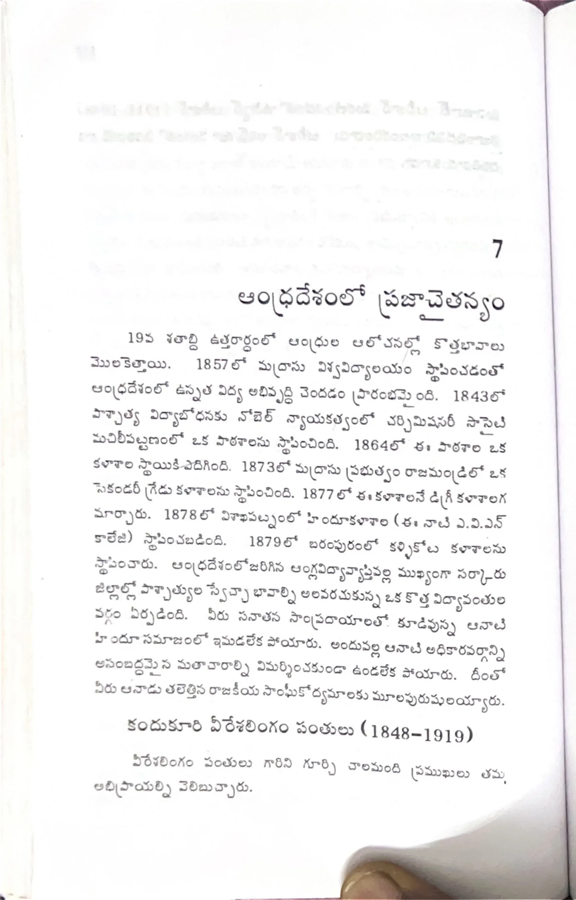

ముద్రిత పుట 118
scanతో మాన్యువల్గా ధృవీకరించిన పాఠ్యం

7 ఆంధ్రదేశంలో ప్రజాచైతన్యం 19వ శతాబ్ది ఉత్తరార్థంలో ఆంధ్రుల ఆలోచనల్లో కొత్తభావాలు మొలకెత్తాయి. 1857లో మద్రాసు విశ్వవిద్యాలయం స్థాపించడంతో ఆంధ్రదేశంలో ఉన్నత విద్య అభివృద్ధి చెందడం ప్రారంభమైంది. 1843లో పాశ్చాత్య విద్యాబోధనకు నోబెల్ నాయకత్వంలో చర్చిమిషనరీ సొసైటీ మచిలీపట్నంలో ఒక పాఠశాలను స్థాపించింది. 1864లో ఈ పాఠశాల ఒక కళాశాల స్థాయికి ఎదిగింది. 1873లో మద్రాసు ప్రభుత్వం రాజమండ్రిలో ఒక సెకండరీ గ్రేడు కళాశాలను స్థాపించింది. 1877లో ఈ కళాశాలనే డిగ్రీ కళాశాలగ మార్చారు. 1878లో విశాఖపట్నంలో హిందూకళాశాల (ఈ నాటి ఎ.వి.ఎన్ కాలేజి) స్థాపించబడింది. 1879లో బరంపురంలో ఖల్లికోట కళాశాలను స్థాపించారు. ఆంధ్రదేశంలో జరిగిన ఆంగ్లవిద్యావ్యాప్తివల్ల ముఖ్యంగా సర్కారు జిల్లాల్లో పాశ్చాత్యుల స్వేచ్ఛా భావాల్ని అలవరచుకున్న ఒక కొత్త విద్యావంతుల వర్గం ఏర్పడింది. వీరు సనాతన సాంప్రదాయాలలో కూడివున్న ఆనాటి హిందూ సమాజంలో ఇమడలేక పోయారు. అందువల్ల ఆనాటి అధికారవర్గాన్ని, అసంబద్ధమైన మతాచారాల్ని విమర్శించకుండా ఉండలేక పోయారు. దీంతో వీరు ఆనాడు తలెత్తిన రాజకీయ సాంఘీకోద్యమాలకు మూలపురుషులయ్యారు. కందుకూరి వీరేశలింగం పంతులు (1848-1919) వీరేశలింగం పంతులు గారిని గూర్చి చాలమంది ప్రముఖులు తమ అభిప్రాయాల్ని వెలిబుచ్చారు.